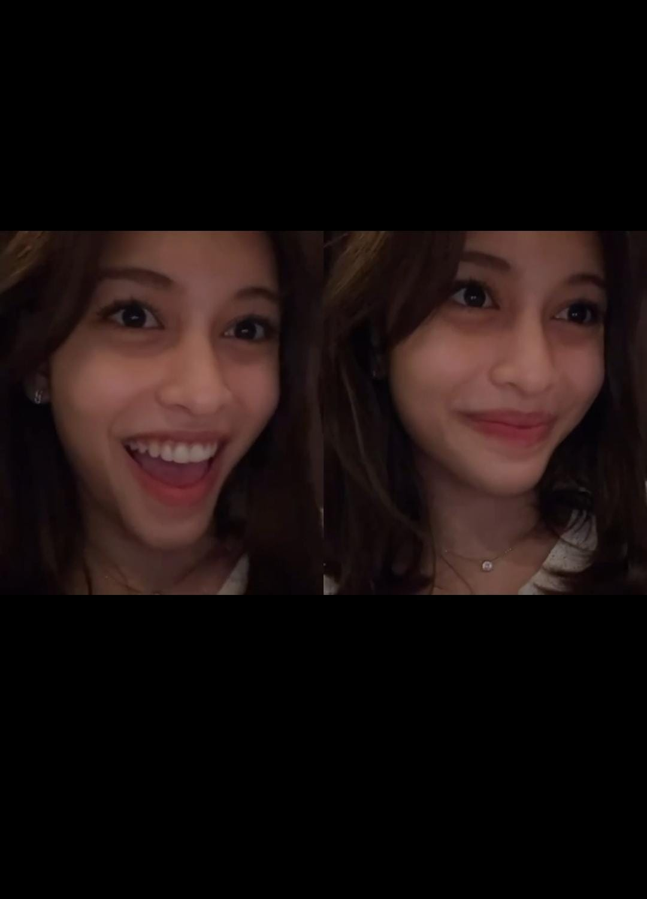

A little something for you
Happy Birthday
Nadhifa Pretty Kamalia

Foto ini aku pilih karena cute haha
I made something special just for you.
A LETTER FOR YOU
Special Birthday Wishes,
Dear Divaaa,
Happy birthday yaa cantik.
Aku sebenarnya sempat bingung, gimana cara yang paling tepat buat mengucapkan selamat ulang tahun kepadamu. Rasanya, kalau hanya menulis "Happy Birthday" aja, ada terlalu banyak hal yang ingin aku sampaikan yang akhirnya tidak tersampaikan.
Jadi, aku memilih cara yang sedikit berbeda.
Aku buat website kecil ini secara manual, dari awal. Tanpa beli template, tanpa meminta orang lain untuk membuatkannya. Walaupun harus kuakui, hanya ada satu asisten pribadiku yang bantu, Atlas namanya haha.
Ini juga pertama kalinya aku buat sesuatu seperti ini. Jadi kalau hasilnya masih sederhana, maaf yaa Diva. Aku masih belajar dari nol tentang gimana membuat sebuah website. Tapi justru karena ini adalah pertama kalinya, aku ingin sesuatu yang kubuat sendiri menjadi bagian dari hadiah kecil untukmu.
Kalau ditanya apa yang paling aku suka darimu, mungkin jawabannya bukan sesuatu yang rumit.
Aku suka senyummu yang tulus. Hatimu yang lembut. Suaramu yang entah bagaimana selalu punya cara untuk menenangkan.
Tapi ada satu hal lain yang mungkin jauh lebih sulit untuk kujelaskan dengan kata-kata.
Setelah sekian lama aku menutup hatiku, ternyata kamu adalah seseorang yang mampu mengetuk pintu itu lagi. Dan mungkin kamu tidak pernah benar-benar tahu seberapa berarti hal itu bagiku.
Ada satu momen yang sampai sekarang masih aku ingat. Saat aku pernah memelukmu, dan kamu memelukku kembali. Aku yakin kamu udah lupa momen itu haha....
Mungkin bagi orang lain itu hanya sebuah pelukan. Tapi bagiku, ada sesuatu yang terasa berbeda di dalamnya. Ada rasa tenang yang sulit dijelaskan, dan ada sebuah perasaan bahwa untuk sesaat, semuanya terasa berada di tempat yang semestinya.
Aku juga masih ingat ketika kamu pernah mengatakan, "Jadilah saksi di pernikahanku, temani aku saat aku dikuburkan, dan Dzaky yang sebagai pelindungnya."
Entah kamu masih mengingat kalimat itu atau tidak, tapi aku mengingatnya.
Dan kalau suatu hari nanti takdir benar-benar membawa kita sampai sejauh itu, aku rasa aku tidak ingin hanya menjadi seseorang yang berdiri sebagai saksi di hari pernikahanmu.
Kalau Tuhan mengizinkan, aku ingin menjadi orang yang berdiri di hadapanmu dan mengucapkan akad itu.
Tapi untuk hari ini, aku tidak ingin membicarakan terlalu jauh tentang masa depan. Hari ini adalah tentang kamu. Tentang bertambahnya satu tahun lagi dalam perjalanan hidupmu.
Aku berharap kamu selalu bahagia. Bukan hanya bahagia ketika semuanya berjalan sesuai rencana, tetapi juga tetap menemukan alasan untuk tersenyum ketika hidup sedang mengajarkanmu sesuatu.
Aku berharap kamu bisa menikmati setiap progres yang sudah kamu capai, sekecil apa pun itu. Jangan terlalu sibuk mengejar sesuatu sampai lupa melihat seberapa jauh sebenarnya kamu sudah berjalan.
Semoga apa pun yang kamu inginkan di masa depan satu per satu bisa tercapai. Semoga kamu bisa pergi ke tempat-tempat yang selama ini ingin kamu kunjungi, melihat dunia lebih luas, menemukan banyak hal baru, dan mengumpulkan cerita sebanyak mungkin.
Dan kalau suatu hari nanti ada kesempatan untuk berkeliling dunia bersama seseorang, semoga aku termasuk salah satu orang yang bisa berada di sampingmu.
Semoga kamu selalu diberikan kesehatan, umur yang panjang, rezeki yang semakin luas dan berkah, serta kekuatan untuk menyelesaikan setiap masalah yang datang kepadamu.
Tetaplah menjadi Diva yang kuat. Bukan berarti kamu harus selalu terlihat baik-baik saja, tetapi semoga kamu selalu punya keberanian untuk bangkit setiap kali hidup membuatmu jatuh.
Aku tidak tahu seperti apa bentuk hidup kita beberapa tahun dari sekarang. Banyak hal bisa berubah, banyak hal bisa datang tanpa pernah kita rencanakan.
Tapi ada satu hal yang ingin tetap kuingat dan ingin kusampaikan kepadamu hari ini.
Perlu diingat, tujuanku masih sama. Aku harap aku bisa mencapai tujuanku, yaitu berlabuh di kamu.
Jadi untuk hari ini, nikmati harimu. Nikmati orang-orang yang menyayangimu. Nikmati setiap doa yang datang untukmu. Dan semoga ketika kamu melihat kembali website kecil ini suatu hari nanti, kamu bisa tersenyum dan mengingat bahwa pernah ada seseorang yang dengan segala keterbatasannya mencoba membuat sesuatu dari nol hanya untuk memberikan sedikit kebahagiaan di hari ulang tahunmu.
Once again, happy birthday, Divaa.
With warmth,
Mare
♡
And perhaps, wherever life takes us...
I hope our paths keep finding their way back to each other.
— Mare